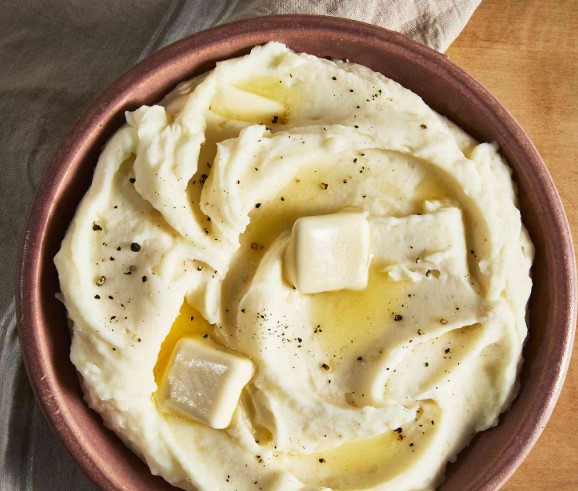

Mashed Potatoes Recipe

This mashed potato recipe is perfect if you're looking for good, old-fashioned mashed potatoes.
Made with just potatoes, milk, butter, and optional garlic, this go-to recipe makes a classic holiday dish.
Learn how to make mashed potatoes that come out smooth, creamy, and delicious every time!
Serve with gravy or extra butter on top.
How to Make Mashed Potatoes
You'll find the full, step-by-step recipe below — but here's a brief overview of what you can expect when you make these mashed potatoes:
- Boil the potatoes: Add the potatoes and garlic to a large pot of salted, boiling water. Reduce the heat and simmer until the potatoes are tender.
- Heat the milk: Heat the milk and butter in a saucepan until the butter is melted.
- Mash the potatoes: Drain the potatoes, then return them to the pot. Slowly add the warm milk mixture, mashing with a potato masher or blending with a mixer until the potatoes are smooth and creamy. Season to taste.
Go Back